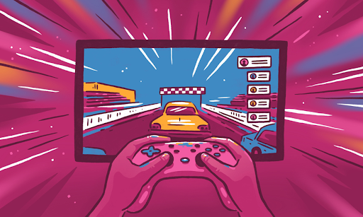

CONSIDERATIONS IN CHOOSING CONTENT TYPES
- Content that will play to the Individual Strengths Of All Involved
- Popularity in Target Audience
- Value & Utility to the Viewer
- Feasibility of the Content
- Content that will gain the Most Viewing Traffic
- Portrayal of Skill of focus
CHOSEN CONTENT FOR YT CHANNEL
We have chosen the Gaming Content for our YT channel. This is due to the fact that almost all members of the team are gamers or had at least have experience and knowledge in playing games. It plays to the individual strengths of our members and the skills of focus of our team regarding the creation and portrayal of our content. In consideration to popularity and viewing traffic, We have found that The gaming industry continues to rise in popularity among youths and young adults. According to Statista over 666 million people around the world had been watching gaming content since 2017. This content is feasible and accessible to most as the market for phones, laptops, gaming comps and other forms of technology which enables gaming remains stable. Gaming content is utilized by its viewers to learn and connect with the gaming community.  CHARACTERISTICS OF OUR CONTENT
- Interactive
- Informative
- Honest & Genuine
- Strategic
- Good Camaraderie
IDEAS FOR THE OUR YOUTUBE CONTENT
IDEA 1
The first idea for our content is for the members of our team to try out different games that are rising in popularity and give out our honest opinions regarding our experiences while playing the game.
This will include the recording of the game itself and our reactions while playing the game.
The gamers would then explain the pros and cons of the game as well as their thoughts on which group of people could potentially enjoy the game.
THOUGHT PROCESS OF THE IDEA
We came upon this idea because of the rising numbers of games that are emerging in the Gen-Z Era.
Due to our prior experiences, we have eluded that people want to know if a game is worth playing before they actually download it.
As they do not want to waste their time, storage, and even money on a game that they will not enjoy.
This content will be important for players to form an opinion of games they wish to play and to know what they should expect.
FACTORS THAT WERE CONSIDERED
- The Needs and Wants of Our Target Audience
- Utility of the Content
- Entertainment and Excitement
- Attention Catching Content
- Interactivity within Gaming Community
IDEA 2
The second idea is to play games that consist of groups and show how we play the game as a group.
This will include showing our camaraderie and strategies we did to successfully win the match as well as how we portrayed the eminent skill of coordinating all our individual strengths.
THOUGHT PROCESS OF THE IDEA
We have come to this idea because we want to show how we can use our focused skills in this type of content.
Since we have been seeing many groups making their own team,
We have concluded that they would want to know how to collaborate with their comrades effectively as well as to know different strategies that they could try for both fun and leveling up in the game.
FACTORS THAT WERE CONSIDERED
- Portrayal of Focused skills
- Entertaining and Calming content
- Depicting Cognitive Awareness
IDEA 1
THOUGHT PROCESS OF THE IDEA
We came upon this idea because of the rising numbers of games that are emerging in the Gen-Z Era. Due to our prior experiences, we have eluded that people want to know if a game is worth playing before they actually download it. As they do not want to waste their time, storage, and even money on a game that they will not enjoy. This content will be important for players to form an opinion of games they wish to play and to know what they should expect.FACTORS THAT WERE CONSIDERED
- The Needs and Wants of Our Target Audience
- Utility of the Content
- Entertainment and Excitement
- Attention Catching Content
- Interactivity within Gaming Community
IDEA 2
THOUGHT PROCESS OF THE IDEA
We have come to this idea because we want to show how we can use our focused skills in this type of content. Since we have been seeing many groups making their own team, We have concluded that they would want to know how to collaborate with their comrades effectively as well as to know different strategies that they could try for both fun and leveling up in the game.FACTORS THAT WERE CONSIDERED
- Portrayal of Focused skills
- Entertaining and Calming content
- Depicting Cognitive Awareness